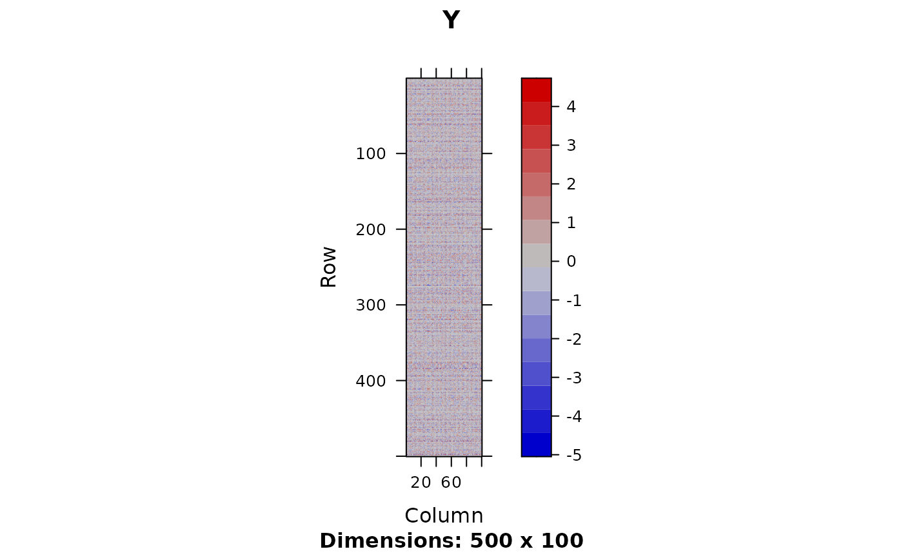
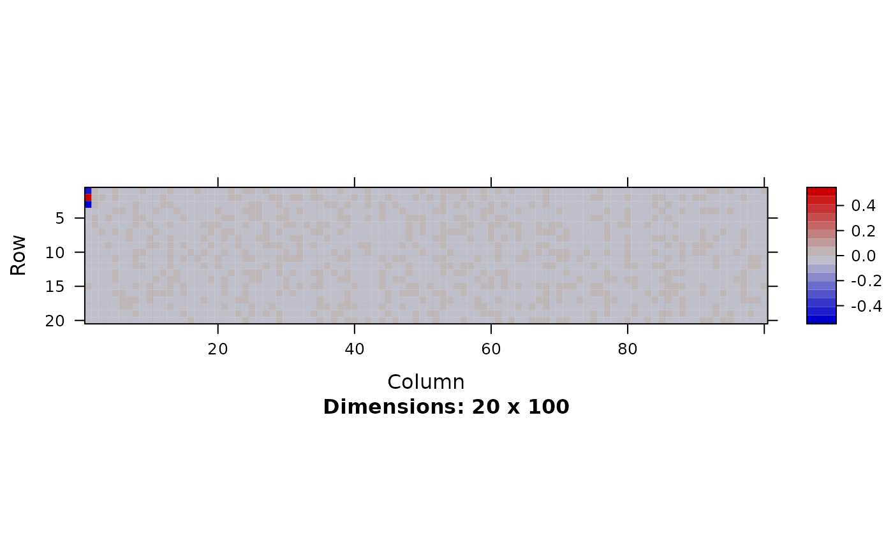
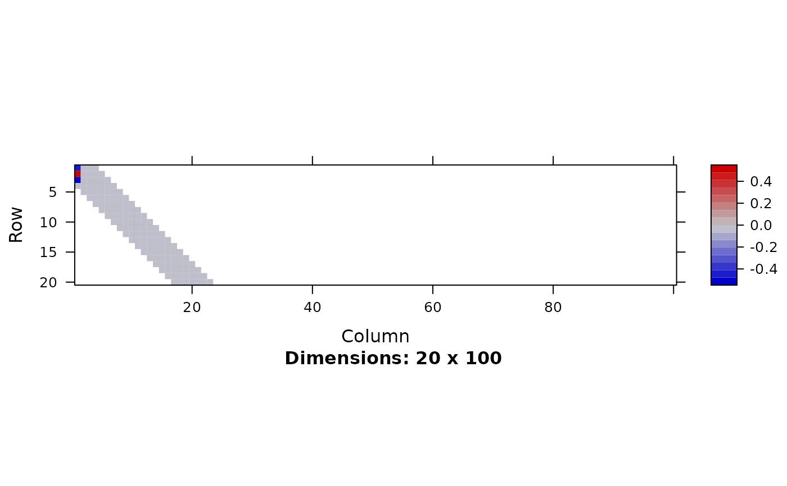
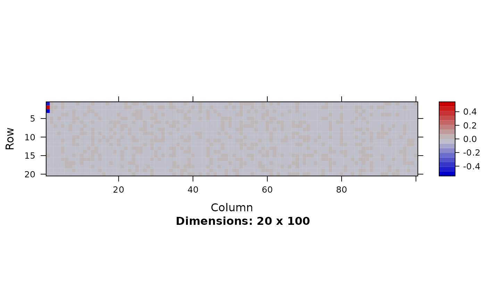
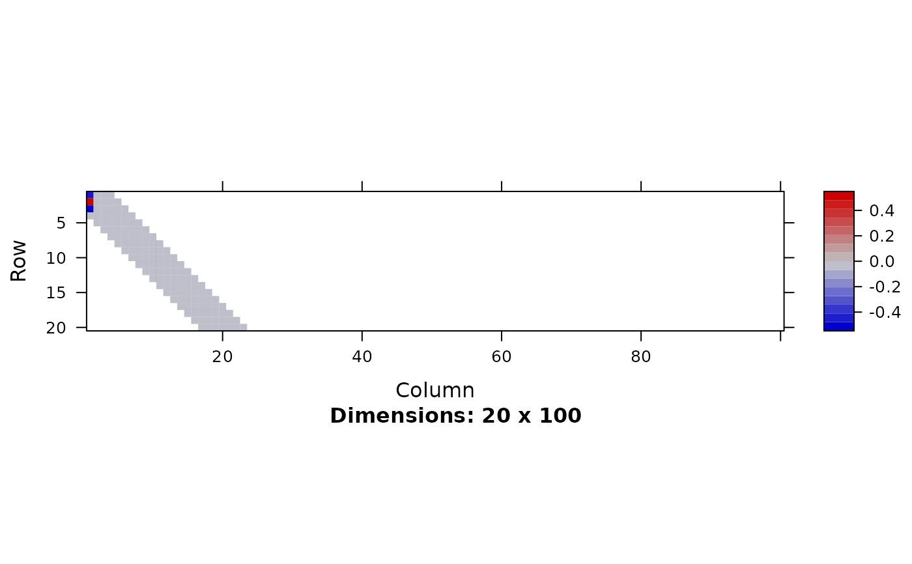

Variational inference of matrix factorization
fit.fqtl.factorize.RdVariational inference of matrix factorization
fit.fqtl.factorize(
y,
k = 1,
svd.init = TRUE,
model = c("gaussian", "nb", "logit", "voom", "beta"),
x.mean = NULL,
c.mean = NULL,
x.var = NULL,
y.loc = NULL,
y.loc2 = NULL,
x.mean.loc = NULL,
cis.dist = 1e+06,
do.hyper = FALSE,
tau = NULL,
pi = NULL,
tau.lb = -10,
tau.ub = -4,
pi.lb = -4,
pi.ub = -1,
tol = 1e-04,
gammax = 1000,
rate = 0.01,
decay = 0,
jitter = 0.1,
nsample = 10,
vbiter = 2000,
verbose = TRUE,
print.interv = 10,
nthread = 1,
rseed = NULL,
options.mf = list(),
options.reg = list()
)Arguments
- y
[n x m] response matrix
- k
Rank of the factorization (default: 1)
- svd.init
Initalize by SVD (default: TRUE)
- model
choose an appropriate distribution for the generative model of y matrix from
c('gaussian', 'nb', 'logit', 'voom', 'beta')(default: 'gaussian')- x.mean
[n x p] primary covariate matrix for mean change (can specify location)
- c.mean
[n x q] secondary covariate matrix for mean change (dense)
- x.var
[n x r] covariate marix for variance#'
- y.loc
m x 1 genomic location of y variables
- y.loc2
m x 1 genomic location of y variables (secondary)
- x.mean.loc
p x 1 genomic location of x.mean variables
- cis.dist
distance cutoff between x and y
- do.hyper
Hyper parameter tuning (default: FALSE)
- tau
Fixed value of tau
- pi
Fixed value of pi
- tau.lb
Lower-bound of tau (default: -10)
- tau.ub
Upper-bound of tau (default: -4)
- pi.lb
Lower-bound of pi (default: -4)
- pi.ub
Upper-bound of pi (default: -1)
- tol
Convergence criterion (default: 1e-4)
- gammax
Maximum precision (default: 1000)
- rate
Update rate (default: 1e-2)
- decay
Update rate decay (default: 0)
- jitter
SD of random jitter for mediation & factorization (default: 0.01)
- nsample
Number of stochastic samples (default: 10)
- vbiter
Number of variational Bayes iterations (default: 2000)
- verbose
Verbosity (default: TRUE)
- print.interv
Printing interval (default: 10)
- nthread
Number of threads during calculation (default: 1)
- rseed
Random seed
- options.mf
A combined list of inference options for matrix factorization.
- options.reg
A combined list of inference options for regression effects.
Value
a list of variational inference results
Details
Correct hidden confounders lurking in expression matrix using low-rank matrix factorization including genetic and other biological covariates. We estimate the following model:
mean $$\mathsf{E}[Y] = U V^{\top} + X \theta_{\mathsf{local}} + C \theta_{\mathsf{global}}$$
and variance $$\mathsf{V}[Y] = X_{\mathsf{var}} \theta_{\mathsf{var}}$$
We determined ranks by group-wise spike-slab prior imposed on the columns of U and V.
Examples
require(fqtl)
require(Matrix)
n <- 500
m <- 100
k <- 3
p <- 200
u <- matrix(rnorm(n * k), n, k)
v <- matrix(rnorm(m * k), m, k)
p.true <- 3
theta.true <- matrix(sign(rnorm(1:p.true)), p.true, 1)
X <- matrix(rnorm(n * p), n, p)
y.resid <- X[,1:p.true] %*% theta.true
y <- u %*% t(v) + 0.5 * matrix(rnorm(n * m), n, m)
y[,1] <- y[,1] + y.resid
y <- scale(y)
x.v <- matrix(1, n, 1)
xx <- as.matrix(cbind(X, 1))
mf.opt <- list(tol=1e-8, rate=0.01, pi.ub=0, pi.lb=-2, svd.init = TRUE,
jitter = 1e-1, vbiter = 1000, gammax=1e4, mf.pretrain = TRUE, k = 10)
reg.opt <- list(pi.ub=-2, pi.lb=-4, gammax=1e4, vbiter = 1000)
## full t(xx) * y adjacency matrix
mf.out <- fit.fqtl.factorize(y, x.mean = xx, x.var = x.v, options.mf = mf.opt)
image(Matrix(y), main = 'Y')

image(Matrix(mf.out$U$theta), main = 'U')
image(Matrix(mf.out$V$theta), main = 'V')
 image(Matrix(mf.out$mean$theta[1:20,]))

## sparse t(xx) * y adjacency matrix
mf.out <- fit.fqtl.factorize(y, x.mean = xx, x.var = x.v, x.mean.loc = 1:(p+1),
y.loc = 1:m, cis.dist = 3,
options.mf = mf.opt,
options.reg = reg.opt)
image(Matrix(mf.out$U$theta), main = 'U')
image(Matrix(mf.out$V$theta), main = 'V')
image(Matrix(mf.out$mean$theta[1:20,]))

## mixed, sparse and dense
c.m <- matrix(1, n, 1)
mf.out <- fit.fqtl.factorize(y, x.mean = xx, x.var = x.v, x.mean.loc = 1:(p+1),
y.loc = 1:m, cis.dist = 3, c.mean = c.m,
options.mf = mf.opt,
options.reg = reg.opt)
image(Matrix(mf.out$U$theta), main = 'U')
image(Matrix(mf.out$V$theta), main = 'V')
image(Matrix(mf.out$mean$theta[1:20,]))

## sparse t(xx) * y adjacency matrix
mf.out <- fit.fqtl.factorize(y, x.mean = xx, x.var = x.v, x.mean.loc = 1:(p+1),
y.loc = 1:m, cis.dist = 3,
options.mf = mf.opt,
options.reg = reg.opt)
image(Matrix(mf.out$U$theta), main = 'U')
image(Matrix(mf.out$V$theta), main = 'V')
image(Matrix(mf.out$mean$theta[1:20,]))

## mixed, sparse and dense
c.m <- matrix(1, n, 1)
mf.out <- fit.fqtl.factorize(y, x.mean = xx, x.var = x.v, x.mean.loc = 1:(p+1),
y.loc = 1:m, cis.dist = 3, c.mean = c.m,
options.mf = mf.opt,
options.reg = reg.opt)
image(Matrix(mf.out$U$theta), main = 'U')
image(Matrix(mf.out$V$theta), main = 'V')